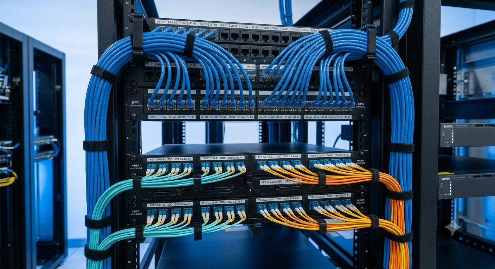
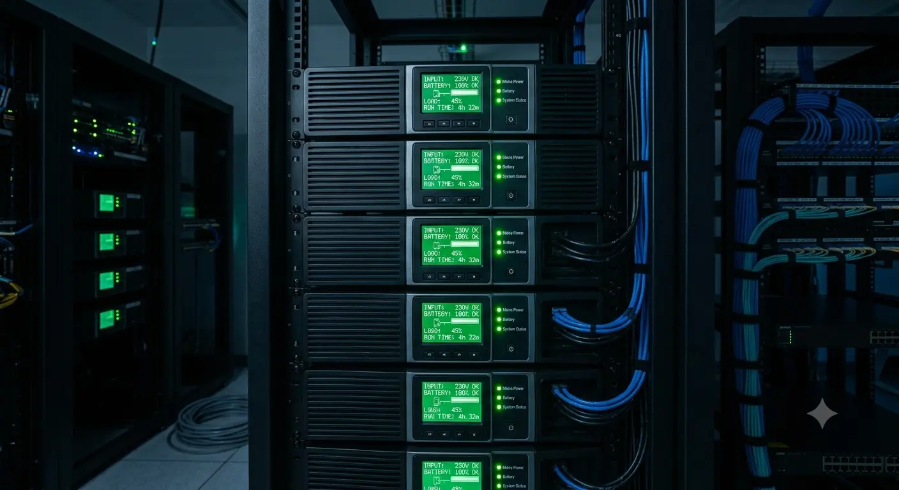
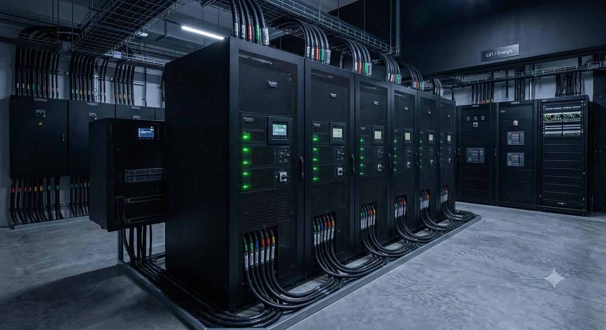

Conception, équipements actifs et passifs, alimentation ondulée, climatisation et supervision environnementale. Une salle serveur professionnelle est un système où chaque composant est dimensionné pour les défaillances de tous les autres.
Au-delà du catalogue : GTEL intervient sur l'ensemble du cycle de vie de votre infrastructure IT — depuis l'audit initial jusqu'à la supervision en exploitation.
Beaucoup d'entreprises hébergent leurs serveurs dans des locaux non conçus pour cet usage : bureau réaffecté, placard ventilé, sous-sol. Les conséquences se manifestent toujours au pire moment.
La température dépasse les seuils en été. Les serveurs s'arrêtent ou se dégradent prématurément. La durée de vie du matériel est divisée par deux.
À chaque micro-coupure, les serveurs redémarrent brutalement. Risque de corruption de données et indisponibilité de plusieurs heures.
Toute intervention devient un risque. Diagnostiquer un incident prend des heures. Les pannes se multiplient à chaque manipulation.
Une fuite d'eau ou un départ de feu nocturne n'est détecté que le lendemain. Les pertes peuvent dépasser 100 000 MAD pour une PME.
N'importe qui peut débrancher, modifier, voler. Aucune traçabilité. Risque opérationnel et de conformité.
La température dépasse les seuils en été. Les serveurs s'arrêtent ou se dégradent prématurément. La durée de vie du matériel est divisée par deux.
À chaque micro-coupure, les serveurs redémarrent brutalement. Risque de corruption de données et indisponibilité de plusieurs heures.
Toute intervention devient un risque. Diagnostiquer un incident prend des heures. Les pannes se multiplient à chaque manipulation.
Une fuite d'eau ou un départ de feu nocturne n'est détecté que le lendemain. Les pertes peuvent dépasser 100 000 MAD pour une PME.
N'importe qui peut débrancher, modifier, voler. Aucune traçabilité. Risque opérationnel et de conformité.
Nous concevons l'habitat critique de vos données, du génie civil technique à l'intelligence de supervision.
 01
MOD.01
01
MOD.01
Étude thermique, calcul de charge, plan d'implantation des baies.

02 MOD.02Racks, panneaux de brassage, organisation, étiquetage normé.

03 MOD.03Onduleurs en ligne, redondance N+1, autonomie calculée selon le scénario de coupure.
Climatiseurs dédiés, gestion des points chauds, contrôle d'humidité.
Capteurs température, humidité, fumée, fuite d'eau, accès physique.
Contrôle d'accès, vidéosurveillance dédiée, détection incendie.
Une salle serveur professionnelle repose sur des couches indépendantes mais coordonnées. Si l'une cède, les autres tiennent.
Onduleurs redondés N+1, by-pass automatique, lien vers groupe électrogène si site critique.

Climatisation dédiée, surdimensionnée. Allées chaudes/froides séparées et flux d'air optimisés.
Sondes environnementales sur tous les paramètres critiques. Alertes SMS et email 24/7 en temps réel.
Une démarche structurée pour établir, déployer et superviser une salle serveur résistante et opérationnelle.
Nous mesurons l'existant : charge électrique réelle, dissipation thermique, points de défaillance, capacité résiduelle. Cet audit détermine si une rénovation suffit ou si une nouvelle salle est nécessaire.
Plan d'implantation, calcul de redondance, dimensionnement de la climatisation, schéma électrique. Livrable : un dossier de conception détaillé auditable par un tiers indépendant.
Coordination avec les corps d'état (électricien, climaticien, sécurité incendie). Mise en service par phases pour préserver la continuité d'activité. Tests de bascule sur onduleurs et de coupure simulée.
Activation de la supervision environnementale, paramétrage des seuils d'alerte, formation de vos équipes.
Cela dépend de l'audit initial. Dans 60% des cas, une rénovation par phases (urbanisation modulaire) est possible : nous remplaçons la climatisation en priorité, puis le système d'onduleurs (UPS), et enfin le recâblage des baies. Cette approche permet d'étaler l'investissement financier sur plusieurs mois tout en évitant l'arrêt critique de l'activité (zero downtime).
L'autonomie standard d'un onduleur dimensionné pour une entreprise se situe entre 15 et 30 minutes. Le but de l'onduleur n'est pas de tenir des heures lors d'une coupure, mais de permettre un arrêt propre et sécurisé des serveurs pour éviter la corruption des données, ou de donner le temps à un groupe électrogène de prendre le relais. Si votre activité exige un uptime de 100%, nous recommandons le couplage avec un groupe électrogène.
Absolument. C'est même la majorité de nos interventions. Le déménagement ou la restructuration d'une salle serveur pour une entreprise en pleine activité exige une planification extrêmement rigoureuse : bascule (failover) progressive, travail de nuit ou lors des fenêtres de maintenance hors heures critiques. Notre équipe garantit la continuité de votre production.
Cela dépend de l'audit initial. Dans 60% des cas, une rénovation par phases (urbanisation modulaire) est possible : nous remplaçons la climatisation en priorité, puis le système d'onduleurs (UPS), et enfin le recâblage des baies. Cette approche permet d'étaler l'investissement financier sur plusieurs mois tout en évitant l'arrêt critique de l'activité (zero downtime).
L'autonomie standard d'un onduleur dimensionné pour une entreprise se situe entre 15 et 30 minutes. Le but de l'onduleur n'est pas de tenir des heures lors d'une coupure, mais de permettre un arrêt propre et sécurisé des serveurs pour éviter la corruption des données, ou de donner le temps à un groupe électrogène de prendre le relais. Si votre activité exige un uptime de 100%, nous recommandons le couplage avec un groupe électrogène.
Absolument. C'est même la majorité de nos interventions. Le déménagement ou la restructuration d'une salle serveur pour une entreprise en pleine activité exige une planification extrêmement rigoureuse : bascule (failover) progressive, travail de nuit ou lors des fenêtres de maintenance hors heures critiques. Notre équipe garantit la continuité de votre production.
Auditer votre salle serveur thermique et électrique pour détecter les faiblesses avant qu'elles n'affectent votre production.